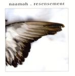

| Artist: | Namaah |
| Title: | Resensement |
| Label: | Metal Mind Records MMP CD 0246 |
| Length(s): | 65 minutes |
| Year(s) of release: | 2004 |
| Month of review: | [01/2005] |
| 1) | Daydream Part One | 10.13 |
| 2) | Severed | 7.24 |
| 3) | Not For You | 6.33 |
| 4) | Subsistance | 6.22 |
| 5) | Red Light (instrumental) | 6.45 |
| 6) | Alright | 7.19 |
| 7) | Daydream Part Two | 10.53 |
| 8) | Subsistance (polish Version) | 6.23 |
| 9) | Twoja (piano Version) | 2.34 |
The riff of Not For you, in combination with the storng bass presence sounds extremely familiar (but what is it?). The following balladic passage reminds of Hogarth era Marillion, but soon the rhythm guitars set in again and we are back in the progmetal. Subsistance simply continues the established style of solid melodic progmetal with plenty of bombast and rhythm guitars to satisfy those into the style. Even I like it. What often happens in this line of music is that the songs start out well, but deflate as soon as we come to the vocal parts. This does not happen here. The vocal parts are varied, sometimes rather straightforward, but sometimes quite different, Arabic or otherwise in feel. This kind of variety I guess they gleaned from such bands as The Gathering with whom they have toured. The repetitive guitar lines here are actually really nice, and the Crimsonesque (Discipline era) fragmentariness also sets in. This rocks well.
Red Light (instrumental) is a typical progmetal (a la Dream Theater) instrumental, executed with flair and fire and certainly a group effort. Excellent drive here. At the end some more modern keyboards set in, bringing in a certain dance/house feel. Alright opens in a relaxed mode, in fact this seems to be a ballad with a strong bass, piano and vocal presence. On the whole, not a very impressive track, although the jazz break is nice, with some guitar riff citations flying about. The second part of the track is groovy blues/jazzrock, which can't entice me. The instrumental work out in the middle sounds more like something that could be included in a live version, but I would hardly expect in a recording.
The album itself concludes with almost eleven more minutes of Daydream. Opening with cosmic keyboards we have the usual slow build-up. Some nice atmospherics on the keyboards here, which turns into something dance like. The band certainly is not scared to mix in modern influences, similar to Galahad, Ozrics and the like. The song stays rather floating like and in fact comes quite close to a vocal kind of Ozrics. The expected guitar interruptions don't come in.
Subsistance also exists in a Polish version, which is featured as the first bonus track. Plenty of mysterious vocals and rhtyhm guitars on this one. The second bonus track a piano/vocal version of Twoja (